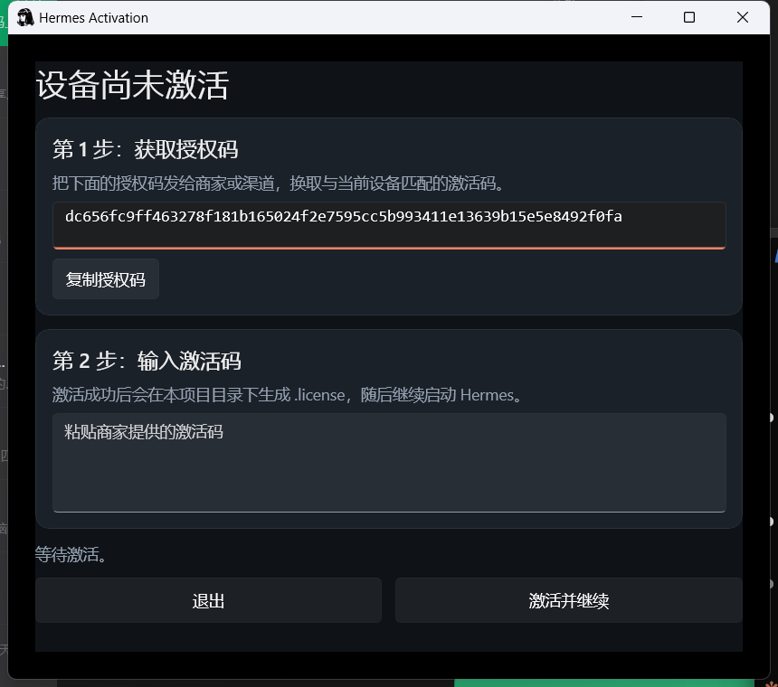
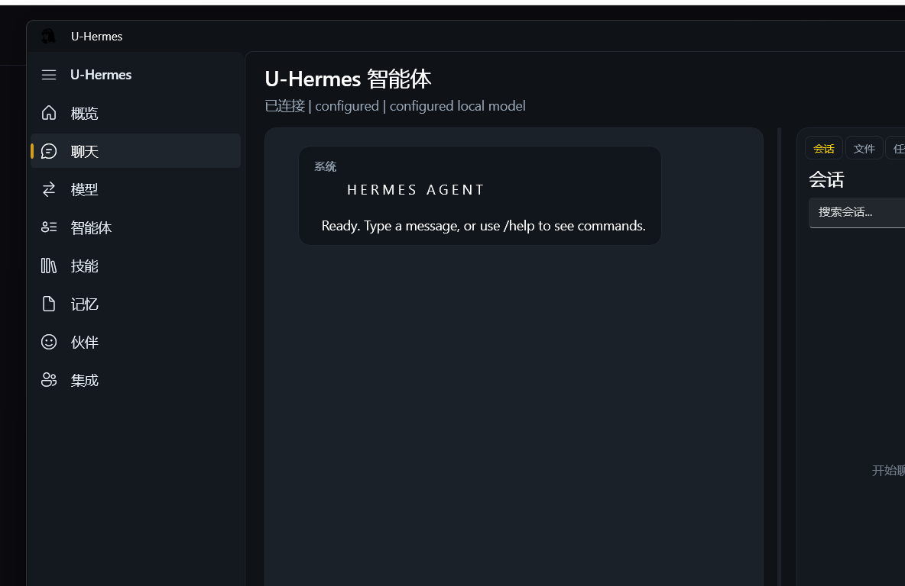
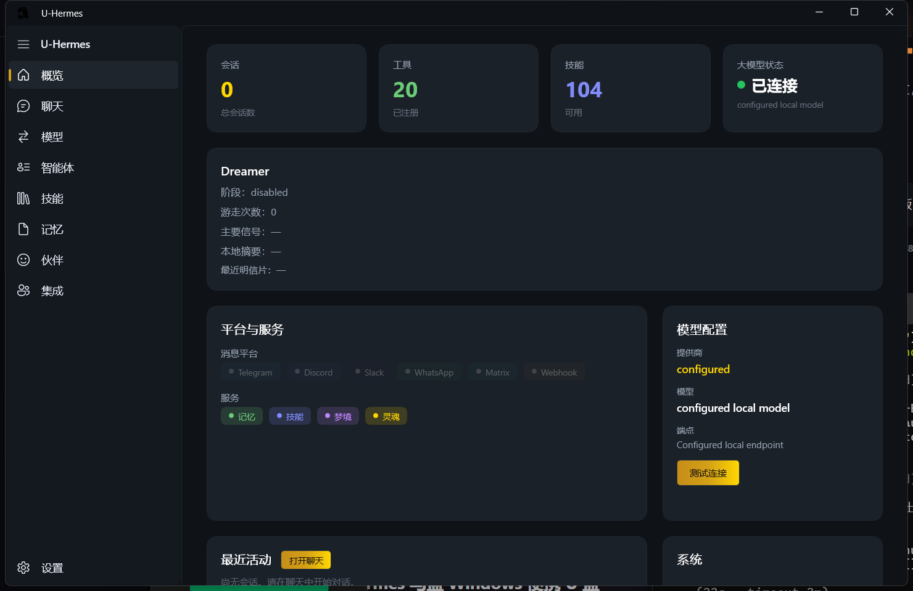
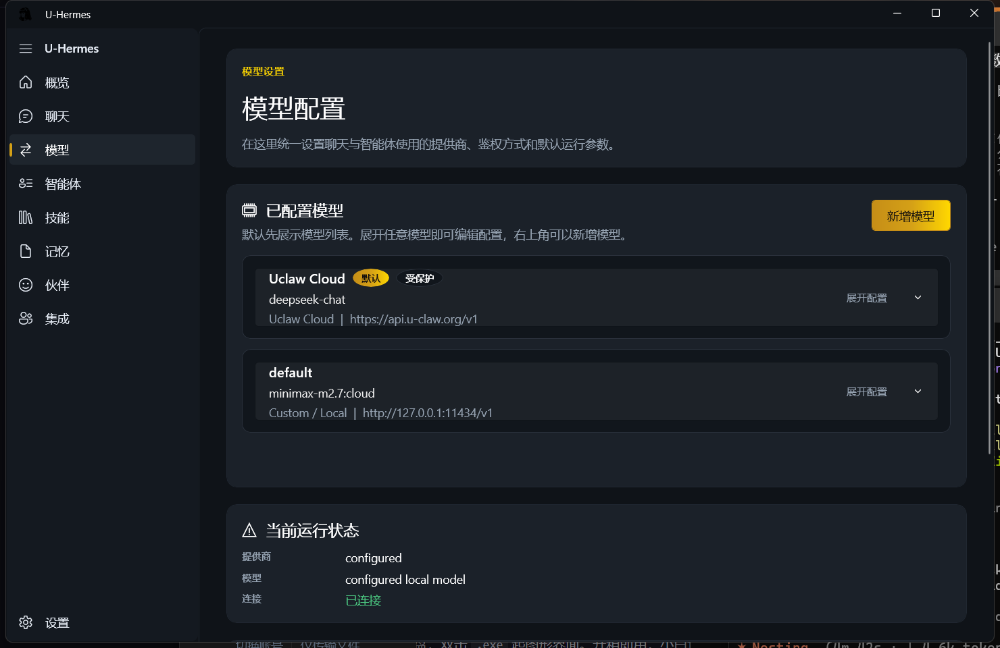
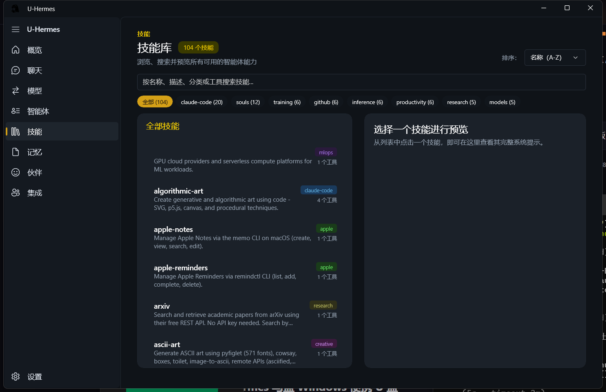
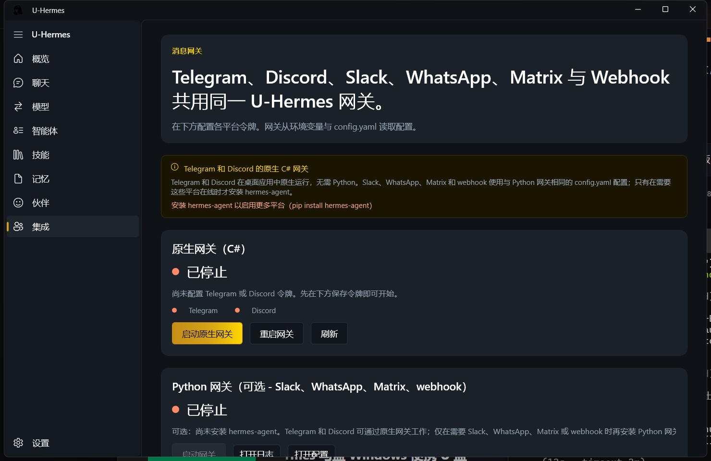

欢迎来到 U-Hermes 学堂
U-Hermes 马盘的官方中文教程中心。U-Hermes 是基于 Windows 原生 WinUI 3 打造的 AI 智能体桌面应用，内置 20+ 工具、104 个技能、Telegram/Discord/Slack/WhatsApp/Matrix 多平台网关。
⚡ 5 分钟快速上手
U-Hermes 马盘开箱即用，按下面 4 步走一遍，5 分钟内就能和 AI 说上话。
-
01插入 U 盘 把 U-Hermes 马盘插到 Windows 10/11 电脑的 USB 口。打开「此电脑」会看到新盘符（一般是 D: / E: / F:），双击进去，可以看到
U-Hermes\和U-Claw\两个产品文件夹。 -
02双击
Launch U-Hermes.cmd进入U-Hermes\文件夹，找到Launch U-Hermes.cmd双击启动。
⚠️ 不要直接双击U-Hermes.exe——.cmd启动器会自动设环境变量让数据保存到 U 盘，直接跑.exe数据可能写到本地。
弹出「Windows 已保护你的电脑」：点「更多信息」→「仍要运行」即可。
被杀毒软件拦截：在杀毒软件里把 U 盘目录添加到白名单后重试。 -
03完成激活（首次启动 / 换电脑时） 首次启动会弹出 Hermes Activation 激活窗口：

- 第 1 步：点「复制授权码」按钮，把这段 64 位字符发给商家（微信 hecare888）
- 第 2 步：商家回复你激活码（一长串 base64 字符），粘贴到第二个输入框
- 点「激活并继续」——窗口自动关闭，进入主界面
-
04开始对话 进入主界面后，左侧菜单点「💬 聊天」，底部输入框打字按回车发送。AI 几秒内开始回复就说明所有环节通了。

默认配的是 虾盘云，新用户有赠送的初始 Token 不用充值就能聊。Token 用完后从「↔ 模型」页或集成页找充值入口。
U-Hermes\data\ 目录里——换台电脑插上，数据完整保留，不要删除这个文件夹。
系统要求
| 项目 | 要求 |
|---|---|
| 操作系统 | Windows 10 1809 / Windows 11（不支持 Mac、Linux、XP/7/8） |
| 架构 | x64（不支持 ARM64 / 32 位） |
| 内存 | 建议 8GB+ |
| 磁盘 | U 盘自带 ≥ 16GB 即可，本地无需空间 |
| .NET 运行时 | 无需自行安装（self-contained，所有依赖打包在 U 盘里） |
| 网络 | 使用虾盘云或在线模型时需联网；纯本地 Ollama 模型可离线 |
💬 第一次对话
控制台打开后，左侧点「新建对话」，底部输入框打字，回车发送。如果 AI 有回复，配置就成功了。
推荐从这些问题开始
这几个问题能快速验证 AI 是否正常工作，也能让你感受一下它能做什么：
验证能否回话
你好，你是谁？你能做什么？
测试写作能力
帮我写一封请假邮件，因为要去医院，请假一天，发给我的领导
测试联网搜索
今天有什么重要的科技新闻？
需要安装联网搜索技能才能获取实时信息
测试推理能力
如果一件商品打了七折之后再打八折，相当于打了几折？
测试翻译能力
把这句话翻译成英文，语气要正式：「感谢您的耐心等待，我们将尽快处理您的请求。」
测试编程能力
用 Python 写一个函数，输入一个列表，返回其中出现次数最多的元素
对话中的常用操作
| 操作 | 怎么做 |
|---|---|
| 发送消息 | 输入框打字后按 Enter，换行用 Shift+Enter |
| 停止回复 | 点击输入框右侧的停止按钮（方形图标），AI 会立即停止生成 |
| 重新生成 | 把鼠标移到 AI 回复上，点击「重新生成」按钮，AI 会给出新的回答 |
| 复制回复 | 把鼠标移到 AI 回复上，点击「复制」图标，复制纯文本内容 |
| 新建对话 | 点击左侧顶部的「新建对话」，开始一个全新的、不带历史记录的对话 |
| 切换模型 | 对话框上方有模型选择下拉菜单，可以随时切换到不同的 AI 模型 |
| 上传文件 | 点击输入框左侧的回形针图标，选择文件（PDF、图片、代码等）上传给 AI 分析 |
U-Hermes\data\hermes-cs\logs\hermes.log 查最近一段错误。
🗺️ 界面总览
U-Hermes 是一个原生 Windows 桌面应用（WinUI 3），左侧 8 个菜单切换不同功能页。

左侧导航 8 个菜单
| 菜单 | 功能说明 |
|---|---|
| 🏠 概览 | 首页，显示会话数、已注册工具数（默认 20）、可用技能数（默认 104）、大模型连接状态、Dreamer 状态、平台与服务、最近活动 |
| 💬 聊天 | 主对话界面（最常用）。和 AI 对话、查看会话历史 |
| ↔ 模型 | 统一管理 AI 模型供应商、API Key、鉴权方式、温度/最大 token 等参数。可同时配多个模型，运行时切换 |
| 👥 智能体 | 管理多个智能体配置（不同 Agent 可有不同的 SOUL.md 系统提示词、不同模型） |
| 📚 技能 | 浏览/启用 104 个内置技能（apple-notes、claude-code、creative、data-science、mlops、productivity 等分类） |
| 📄 记忆 | 长期记忆管理。AI 会把跨会话需要保留的事实写到这里，新会话自动召回 |
| 😊 伙伴 | 个人助理人格（Buddy）配置 |
| 👤 集成 | 消息网关：Telegram、Discord（C# 原生，桌面应用内置）/ Slack、WhatsApp、Matrix、Webhook（需要装 hermes-agent 才能用） |
| ⚙️ 设置 | 左下角，系统级设置 / 关于 |
概览页关键信息
概览页顶部 4 个数字卡片让你一眼看清运行状态：
会话数
历史对话总数。新装时为 0，每开一个新对话就会 +1。
工具（默认 20）
已注册的内置工具：ReadFile / WriteFile / EditFile / Glob / Grep / Bash / Terminal / WebFetch / WebSearch / TodoWrite / ScheduleCron / Lsp / Agent（子智能体）/ Memory / SessionSearch / SkillInvoke / SendMessage / CodeSandbox / Checkpoint / Patch。
技能（默认 104）
预装 104 个 Skill 包，按分类组织。聊天时 AI 自动调用相关 Skill，比如说"画流程图"会调 diagramming Skill。
大模型状态
显示当前配置的模型连接状态（"已连接" 绿色 = OK；"未配置" / "连接失败" = 红色，需检查 API Key）。
Dreamer 是什么
概览页中间有 Dreamer 模块——这是 U-Hermes 独有的 背景闲置自我学习系统。AI 在你不和它对话的时候，会回顾过去的会话提取经验，叫"游走（Walks）"。游走结果生成"信号"和"摘要"，主对话时偶尔被召回作为额外上下文。默认是 disabled，需要在配置文件开启。
数据存哪里
所有数据都在 U 盘 U-Hermes\data\ 目录里：
| 路径 | 内容 |
|---|---|
data\config.yaml | 模型配置 / 鉴权 / 温度等 |
data\SOUL.md | 主 Agent 的系统提示词（人格） |
data\USER.md | 用户档案（让 AI 记住你是谁） |
data\hermes-cs\transcripts\ | 聊天历史（按会话 ID 分文件） |
data\hermes-cs\memory\ | 长期记忆 |
data\hermes-cs\skills\ | 已安装的技能（首次启动从 bundle 复制过来） |
data\hermes-cs\logs\hermes.log | 运行日志（故障排查关键文件） |
🧭 模型选择指南
不同模型各有擅长，用对了事半功倍。以下是根据实际使用场景整理的选择建议。
场景速查表
| 使用场景 | 推荐模型 | 理由 |
|---|---|---|
| 日常聊天、写文章、改邮件 | DeepSeek V3 | 速度快、质量高、价格低 |
| 数学题、逻辑推理、代码分析 | DeepSeek R1 | 专门为推理优化，会展示思考过程 |
| 分析长篇 PDF、大量代码 | Kimi 128K | 支持超长上下文，不截断内容 |
| 图片识别、多模态任务 | 通义千问 Plus | 阿里多模态支持最好 |
| 快速问答、高并发场景 | 通义千问 Turbo | 响应极快，适合频繁调用 |
| 白嫖党 / 测试用 | 硅基流动免费模型 | 有多个完全免费的开源模型 |
| 隐私敏感、完全离线 | 本地 Ollama | 数据不出本机 |
一句话记住每个模型
DeepSeek V3
全能选手，日常首选，中文写作一流，价格良心。
DeepSeek R1
思考型模型，会把推理过程展示出来，适合需要解释过程的场景。
Kimi
长文档专家，把整本书丢给它都没问题。
通义千问
阿里出品，多模态能力强，国内访问最稳定。
硅基流动
聚合平台，一个 Key 用多个模型，有免费额度。
本地 Ollama
完全离线，适合处理敏感数据，但需要一定硬件配置。
☁️ 虾盘云（内置推荐）
虾盘云是 U-Hermes 官方的 AI API 服务，支持 DeepSeek、通义千问等国内主流模型，无需自己到各家官网申请 API Key，充值后直接用，最省事。
为什么推荐虾盘云？
零配置开箱
买到虾盘 U 盘即自带初始额度，插上就能聊，不用注册任何第三方账号。
一个 Key 多模型
一个 API Key 即可访问 DeepSeek V3、DeepSeek R1、通义千问 Turbo/Plus 等多个模型，随时切换。
人民币充值
支付宝付款，无需绑定外币信用卡，工作时间 10 分钟到账。
余额永不过期
充值余额长期有效，用多少扣多少，不用担心到期作废。
支持的模型与价格
| 模型 | 特点 | 输入价格 |
|---|---|---|
| DeepSeek V3 | 综合能力强，日常首选 | ¥3 / 百万 token |
| DeepSeek R1 | 深度推理，解数学/逻辑题 | ¥12 / 百万 token |
| Qwen Turbo | 响应极快，中文优化 | ¥1.8 / 百万 token |
| Qwen Plus | 长文档理解强 | ¥4 / 百万 token |
参考：1 百万 token ≈ 75 万中文字，普通用户每天聊 1-2 小时约消耗 2-5 万 token。
充值步骤
U-Hermes 首次启动会自动写入虾盘云模型配置，并尝试激活初始额度（赠送 token）。额度用完后按以下步骤充值：
-
01查看当前状态U-Hermes 左侧点「↔ 模型」，找到名称为
Uclaw Cloud的模型卡片（顶部带"默认"+"受保护"标签）。卡片显示https://api.u-claw.org/v1即虾盘云端点。展开配置可以看到当前 API Key（自动绑定 U 盘指纹生成，不要修改）。
-
02访问充值页面用浏览器打开：
https://api.u-claw.org/recharge?key=<你的 API Key>
或在 U-Hermes "概览"页找充值入口（部分版本提供一键打开按钮）。 -
03选择金额支付宝付款充值页面选金额（10 / 20 / 50 / 100 / 200 元或自定义），点「支付宝充值」，扫码完成付款。
-
04余额到账付款成功后立即到账（一般 < 1 分钟）。回到 U-Hermes "↔ 模型"页面，刷新就能看到新余额。如超过 30 分钟未到账，加微信 hecare888 并发付款截图。
sk-{USB 指纹 SHA256} 格式，由 U 盘硬件计算得出，不是真正的"密钥"。同一根 U 盘换电脑插上，API Key 不变；换 U 盘则 Key 会变（余额绑定 U 盘）。
如果你习惯直接用 API Key（开发者方式）
虾盘云兼容 OpenAI API 格式，可以在 ChatBox / Cherry Studio / 任何 OpenAI 客户端里直接接入：
🔵 接入 DeepSeek
深度求索出品，目前综合能力最强的国产大模型之一。API 价格极低（V3 约每百万 token 仅 ¥1），新用户注册有免费额度，非常适合自己申请 Key 直接用。
申请步骤
-
1注册账号访问 platform.deepseek.com，用国内手机号注册，无需实名认证，1 分钟完成。
-
2领取免费额度新用户注册后系统会自动发放免费额度（具体金额以官网为准，通常够用一段时间）。在「账户余额」页面可以查看。
-
3创建 API Key进入「API Keys」→「创建 API Key」，给 Key 起个名字（方便区分用途），复制生成的 Key 保存好——它只显示一次。
-
4填入 U-HermesU-Hermes → 设置 → 模型 → 添加供应商，填入以下信息，保存。
两个模型怎么选？
| 模型 | 适合场景 | 特点 |
|---|---|---|
| deepseek-chat（V3） | 写作、翻译、问答、代码生成 | 速度快，综合能力强，日常首选 |
| deepseek-reasoner（R1） | 数学、逻辑、分析报告、复杂推理 | 会展示思维链，回答更可靠但较慢 |
🌙 接入 Kimi
月之暗面出品，最大支持 128K tokens 的超长上下文，是处理长文档的最佳选择。把一整本书、一个完整代码仓库丢给它，都能完整分析，不会截断。
申请步骤
-
1注册账号访问 platform.moonshot.cn，手机号注册，新用户有免费额度赠送。
-
2创建 API Key进入「API Key 管理」→「新建 API Key」，复制保存。
-
3填入 U-Hermes添加供应商，填入以下配置：
☁️ 接入通义千问
阿里云出品，国内访问速度最稳定，免费额度较多，支持图片识别（多模态）。如果你已经在用阿里云生态（钉钉、阿里云盘等），通义千问是最自然的选择。
申请步骤
-
1开通阿里云账号访问 dashscope.aliyuncs.com（灵积模型服务），用支付宝或手机号登录/注册阿里云账号。
-
2开通 DashScope 服务首次登录会引导你开通服务，免费，新用户有赠送额度。
-
3创建 API Key在右上角个人头像 →「API-KEY 管理」→「创建新的 API-KEY」，复制保存。
-
4填入 U-Hermes添加供应商，注意 Base URL 格式与其他不同：
💎 接入硅基流动
聚合型 API 平台，一个 Key 可以访问数十个主流开源模型（Qwen、GLM、Llama 等），有多个完全免费的模型，适合预算有限或想测试不同模型的用户。
申请步骤
-
1注册账号访问 siliconflow.cn，手机号注册，新用户赠送 ¥14 免费额度。
-
2获取 API Key登录后进入「API 密钥」→「新建 API 密钥」，复制保存。
-
3填入 U-Hermes添加供应商，填入配置后，在模型名处填写你想用的具体模型。
推荐模型
| 模型名 | 费用 | 适合场景 |
|---|---|---|
Qwen/Qwen2.5-7B-Instruct | 免费 | 日常问答、文字处理 |
THUDM/glm-4-9b-chat | 免费 | 中文对话，清华出品 |
Qwen/Qwen2.5-72B-Instruct | 付费 | 高质量输出，旗舰级别 |
deepseek-ai/DeepSeek-V3 | 付费 | 通过硅基访问 DeepSeek |
🌍 国际模型
ChatGPT（GPT-4o）、Claude、Gemini 等国际模型能力很强，但 API 在国内访问受限，需要代理或中转才能用。
国际模型概览
| 模型 | 出品方 | 特点 | 国内访问 |
|---|---|---|---|
| GPT-4o | OpenAI | 综合能力强，多模态，应用最广 | ❌ 需代理或中转 |
| Claude 3.5 Sonnet | Anthropic | 写作和代码能力顶级，指令遵循准确 | ❌ 需代理或中转 |
| Gemini Pro | 多模态能力强，有免费额度 | ❌ 需代理或中转 | |
| Llama 3 | Meta | 开源，可本地运行，无审查 | ✅ 可通过硅基流动访问 |
方式一：通过虾盘云中转（推荐）
虾盘云支持部分国际模型的中转服务，不需要你自己配代理，直接填入虾盘云的 Base URL 和 Key 就能用。具体支持哪些国际模型，以 api.u-hermes.org 实际显示的模型列表为准。
方式二：自己申请 + 配代理直连
如果你已有代理环境，也可以直接申请官方 API Key 使用，费率更透明，但需要国际支付方式（信用卡）。
| 模型 | 申请地址 | Base URL | 支付方式 |
|---|---|---|---|
| GPT-4o | platform.openai.com | https://api.openai.com/v1 | 国际信用卡 |
| Claude | console.anthropic.com | https://api.anthropic.com/v1 | 国际信用卡 |
| Gemini | aistudio.google.com | https://generativelanguage.googleapis.com/v1beta/openai | 有免费额度 |
💻 本地模型（Ollama）
使用 Ollama 在本机运行 AI 模型，数据完全不上网，适合处理公司内部文件、个人隐私内容等敏感场景。缺点是需要一定的显卡或内存配置，速度比云端模型慢。
硬件要求参考
| 模型规模 | 最低配置 | 推荐配置 |
|---|---|---|
| 7B 模型（如 qwen2.5:7b） | 8GB 内存 / 集成显卡 | 16GB 内存 / 独立显卡 |
| 14B 模型 | 16GB 内存 + 独显 | 32GB 内存 + 8GB 显存 |
| 70B 模型 | 需要高端 GPU | A100/4090 级别 |
安装步骤
填入 U-Hermes
推荐中文模型
| 模型 | 下载命令 | 适合配置 |
|---|---|---|
| Qwen2.5 7B（推荐入门） | ollama pull qwen2.5:7b | 8GB+ 内存 |
| Qwen2.5 14B | ollama pull qwen2.5:14b | 16GB+ 内存 |
| GLM4 9B | ollama pull glm4:9b | 16GB+ 内存 |
| DeepSeek R1 8B | ollama pull deepseek-r1:8b | 16GB+ 内存 |
🧰 技能库说明
技能（Skill）是 U-Hermes 的能力扩展——每个技能是一个独立功能包，让 AI 从只会聊天变成能真正执行任务。U-Hermes 出厂预装 104 个技能，按分类组织，开箱即用。

技能怎么用
技能是 自动调用 的——你只要正常聊天，AI 会根据问题自动选择合适的 Skill。比如：
- 说"画一个流程图" → AI 调
diagramming技能生成 Mermaid / SVG - 说"读这个 PDF 总结一下" → AI 调
pdf-extract技能解析 - 说"看下我 Apple Notes 里关于会议的笔记" → AI 调
apple-notes技能查询（仅 macOS） - 说"训练一个小模型" → AI 调
mlops/training系列技能给方案
你不需要记住技能名字，AI 会自己挑。但可以在「📚 技能」页面浏览全部 104 个技能，或者关掉不想用的（比如不需要 macOS 相关的可以关掉 apple/ 分类）。
出厂预装的 104 个技能（按分类）
| 分类 | 技能数 | 用途示例 |
|---|---|---|
| claude-code | 20 | 编程：feature-dev、code-review、commit-commands、frontend-design、security-review 等 |
| souls | 12 | 预设 AI 人格：助理、研究员、程序员、写手等不同性格的系统提示词模板 |
| training | 6 | ML 模型训练：unsloth、lora-fine-tuning、weights-and-biases 等 |
| github | 6 | GitHub 操作：查 issue / PR / 写 commit message / 读 repo |
| inference | 6 | 推理引擎：vllm、tensorrt-llm、gguf-quantization 等 |
| productivity | 6 | 办公：email、calendar、apple-reminders、note-taking 等 |
| research | 5 | 学术：arxiv 搜索、论文读取、参考文献整理 |
| models | 5 | 模型推荐：根据任务推荐合适的开源/商业模型 |
| creative | — | 创意：algorithmic-art、ascii-art、storyboard、diagramming |
| data-science | — | 数据：xlsx 处理、tabular 分析、chart 生成、 visualization |
| — | 邮件：lark-mail、smtp 发送、imap 读取 | |
| media | — | 多媒体：video-editor、video-summary、tts、audio-transcribe |
| mlops | — | ML 工程：cloud（modal）、evaluation（lm-eval-harness）、deployment |
| devops | — | 运维：docker、k8s、ci/cd、aws、alibabacloud 系列 |
| apple | — | macOS 专属：apple-notes、apple-reminders、findmy、imessage |
| autonomous-ai-agents | — | 智能体框架：claude-code、codex、hermes-agent、opencode 系列接入 |
| mcp | — | MCP 协议工具集成（Model Context Protocol） |
| diagramming | — | 画图：mermaid、graphviz、draw.io 风格图表 |
| gifs / gaming / leisure | — | 娱乐工具 |
| red-teaming | — | 安全测试相关 |
claude-code (20)）只看那一类。
技能从哪里来？
U-Hermes 内置（默认）
出厂预装 104 个 Skill，覆盖大部分日常场景，无需手动安装。
开箱即用NousResearch 官方
跟着 hermes-agent 上游一起发布的核心技能，接口稳定、官方维护、测试覆盖 80%+。新版本随 hermes-agent 自动更新。
github.com/NousResearch/hermes-agenthermes.org.cn 社区
Hermes 中文社区维护的认证技能 + 社区贡献技能，含中文文档、安全审核、提交流程。
hermes.org.cn/zh/market自己写技能
放一个 SKILL.md 到 data\hermes-cs\skills\my-skill\，按 frontmatter 协议描述输入输出，下次启动 AI 就能用。
技能管理 CLI（开发者）
U-Hermes 桌面版的"技能"页提供图形管理。如果你装了开源版 hermes-agent，也可以用命令行管理：
📦 安装新技能
虾盘预装 104 个技能已够日常使用。如果想装新技能，按以下方式操作：
方式一：从文件夹安装（最简单）
U-Hermes 启动时会扫描 data\hermes-cs\skills\ 目录，每个子文件夹就是一个 Skill。
-
1下载或编写技能从 NousResearch/hermes-agent、hermes.org.cn 中文社区 或 ClawHub 下载技能源码，每个技能是一个含
SKILL.md的文件夹。 -
2放入 skills 目录把技能文件夹（如
my-weather-skill\）整个复制到 U 盘的U-Hermes\data\hermes-cs\skills\下。 -
3重启 U-Hermes关掉 U-Hermes 主窗口，重新双击
Launch U-Hermes.cmd启动。在「📚 技能」页就能看到新技能。 -
4配置 API Key（如需要）部分技能需要 API Key（如 GitHub、Tavily），按 SKILL.md 里的说明填到环境变量或 config.yaml 里。
方式二：CLI 命令（开源版 hermes-agent）
如果你额外装了开源 pip install hermes-agent，可以用 CLI 安装：
SKILL.md 文件长什么样
最简 SKILL.md 模板：
SKILL.md 和源码，特别留意它会读什么环境变量、跑什么命令。NousResearch 官方技能（在 hermes-agent repo 里的）安全可信，社区贡献技能要自己审一遍。
⏰ 定时任务
U-Hermes 内置 schedule_cron 工具，可以让 AI 按时间表自动执行任务。比如：每天早上 8 点总结今日新闻、每小时检查 GitHub Issue、每周生成工作周报。
怎么创建定时任务
直接在「💬 聊天」页跟 AI 说就行，AI 会调用 schedule_cron 工具创建任务。例如：
AI 会自动：① 解析时间（cron 表达式 0 8 * * *）② 把任务存到 data\hermes-cs\tasks\ ③ 后台 ScheduleCron 服务到点触发。
输出方式
U-Hermes 内置 send_message 工具，定时任务结果可以推到：
- Telegram / Discord（C# 原生网关，桌面应用内置）
- Slack / WhatsApp / Matrix / Webhook（需要装 hermes-agent，详见「集成」页）
- Email（如果启用了 email skill）
- 不输出，只把结果保存到
data\hermes-cs\transcripts\，下次进 AI 自己回顾
实用任务示例
| 任务名称 | 触发时间 | 提示词示例 |
|---|---|---|
| 每日新闻摘要 | 每天 8:00 | 搜索今天的科技新闻，总结5条最重要的，每条不超过50字 |
| 工作周报提醒 | 每周五 17:00 | 提醒我填写本周工作周报，并给出周报模板 |
| 天气播报 | 每天 7:30 | 查询【你的城市】今天和明天的天气，给出穿衣建议 |
| GitHub Issue 巡查 | 每天 9:00 | 查看我的 GitHub 仓库今天有哪些新 Issue 和 PR，列出摘要 |
| 学英语打卡 | 每天 21:00 | 给我出一道英语写作练习题，难度中等，给出参考答案 |
🤖 平台接入
U-Hermes 支持 6 个消息平台共用同一网关：Telegram、Discord、Slack、WhatsApp、Matrix、Webhook。配置后 AI 就能在对应平台里收发消息，作为聊天机器人服务。

两种网关分工
原生网关（C#）
桌面应用内置，无需任何额外安装。支持 Telegram 和 Discord 两个平台。配 token 后点"启动原生网关"即可工作。
推荐Python 网关（可选）
仅在需要 Slack / WhatsApp / Matrix / Webhook 时才需要。需要先 pip install hermes-agent，配置文件与原生网关共用 config.yaml。
通用流程
- 在对应平台拿到 bot token（详见下面各平台教程）
- U-Hermes 主界面 → 左侧「👤 集成」
- 在 Telegram 或 Discord 行的输入框粘贴 token，点"保存"
- 点"启动原生网关"按钮，状态从橙色"已停止"变成绿色"运行中"
- 在对应平台给 bot 发消息，AI 就会回复
✈️ Telegram Bot 接入
Telegram 是最容易接入的平台，2 分钟搞定。
1. 创建 Bot（@BotFather）
- 在 Telegram 搜索
@BotFather，开始对话 - 发送
/newbot命令 - 按提示输入 bot 名字（如
My Hermes Bot）和用户名（必须以_bot结尾，如my_hermes_bot） - BotFather 返回一段 token，形如
1234567890:ABCdefGhIJKlmNOPqrstuVWXyz，复制保存
2. 在 U-Hermes 配置
- 主界面 → 左侧「👤 集成」
- 找到 Telegram 行，token 输入框粘贴刚才复制的 token
- 点"保存令牌"
- 点"启动原生网关"，等几秒变成绿色"运行中"
3. 测试
在 Telegram 找到你刚创建的 bot（搜用户名如 @my_hermes_bot），发送 /start 然后随便问个问题。AI 应该几秒内回复。
api.telegram.org。配 Clash / V2Ray 全局代理后即可。
🎮 Discord Bot 接入
Discord bot 适合接入游戏社区、开发者群、海外团队。
1. 创建 Application
- 访问 Discord Developer Portal → 登录
- 点 New Application，输入名字（如
Hermes Bot）→ Create - 左侧 Bot → 在 Token 区点 Reset Token → 确认 → 复制 token（只显示一次！）
- 开启需要的 Privileged Gateway Intents：Message Content Intent 必须打开
2. 邀请 Bot 到服务器
- 左侧 OAuth2 → URL Generator
- Scopes 选
bot - Bot Permissions 选
Send Messages+Read Message History - 复制底部生成的 URL，浏览器打开 → 选你的服务器 → Authorize
3. 在 U-Hermes 配置
- 主界面 → 左侧「👤 集成」
- 找到 Discord 行，粘贴 token，点保存
- 点"启动原生网关"，等绿灯
- 在 Discord 服务器@bot 或私聊，AI 会回复
💼 提示词库 · 办公场景
以下提示词可以直接复制使用，把【】里的内容替换成你的实际情况。
📧 邮件撰写
📝 会议纪要整理
📊 工作周报生成
🎯 方案策划框架
💻 提示词库 · 编程场景
用 AI 辅助编程时，给的上下文越具体，回答越准确。以下是经过验证的高效提问方式。
🔍 解释代码
🐛 Debug 排查
✍️ 写单元测试
✍️ 提示词库 · 内容创作
适合写公众号、小红书、短视频文案等内容场景。
📱 小红书爆款笔记
📢 公众号文章
🌱 提示词库 · 日常生活
✈️ 旅行攻略
💊 健康咨询（预筛查用）
🚀 高级提问技巧
掌握这几个技巧，AI 的回答质量会显著提升。
① 给 AI 设定角色
在提问开头加上角色设定，AI 会以该角色的视角和专业度回答。
② 要求结构化输出
明确告诉 AI 你想要什么格式，避免一大段文字难以阅读。
③ 迭代修改，不要重新开始
AI 的第一次回答往往不是最好的，用这些指令持续优化：
「修改第2点」
只改某一部分，其余保持不变。
「缩短到100字」
让 AI 精简，去掉废话。
「换一个角度」
如果不满意，让 AI 重新想。
「展开第3条」
对某个点深入讲解。
「更口语化一些」
调整语气，更符合你的风格。
「给我3个版本」
让 AI 提供多个选项对比。
④ 追问而不是重问
同一个对话里，AI 会记住上下文。不需要把问题重复一遍，直接追问更高效：
🔀 多模型策略
U-Hermes 支持同时配置多个模型，对话时随时切换。用好这一点，可以大幅提升效果、降低成本。
按任务类型分配模型
| 任务类型 | 推荐模型 | 原因 |
|---|---|---|
| 日常聊天、随手提问 | DeepSeek V3 / 通义千问 Turbo | 响应快，费用低，够用 |
| 写长文章、做深度分析 | DeepSeek V3 / 通义千问 Plus | 输出质量更稳定 |
| 数学题、逻辑推理、代码分析 | DeepSeek R1 | 专门的推理模型，会展示思考过程 |
| 分析 PDF、分析大量代码 | Kimi 128K | 超长上下文，内容不截断 |
| 识别图片内容 | 通义千问 Plus（多模态） | 阿里多模态支持最好 |
| 敏感/隐私内容处理 | 本地 Ollama 模型 | 数据不出本机 |
| 高频调用、测试用途 | 硅基流动免费模型 | 有完全免费的模型，省钱 |
实用技巧：两个模型交叉验证
对于重要的判断或分析（比如合同条款、投资决策、技术方案），可以把同一个问题发给两个不同模型，对比它们的答案。两个模型都同意的结论更可靠，有分歧的地方值得重点关注。
成本控制：按用量选模型
极低成本
通义千问 Turbo：¥1.8/百万 token
适合高频简单问答
均衡选择
DeepSeek V3：约 ¥1/百万 token
质量和成本的最佳平衡
高质量输出
DeepSeek R1 / Kimi Plus
重要任务才用，贵但值
🖥️ 服务器部署 / 长期在线
U-Hermes 桌面版本身是 Windows 桌面应用（基于 WinUI 3 + .NET 10），需要 Windows 桌面环境跑，不能直接部署到 Linux VPS。如果你需要让 Telegram / Discord bot 24 小时在线，有两个方案：
方案 1：本地 Windows 一直开机
最简单的方式——把一台 Windows 电脑（或迷你主机）一直开着，U 盘插上、U-Hermes 后台运行。
-
1用闲置 Windows 主机或迷你主机NUC、Beelink 等小主机功耗低（5-10W），24 小时电费一年也就几十元。
-
2设开机自启把
Launch U-Hermes.cmd的快捷方式放到shell:startup（按 Win+R 输入这条命令打开启动文件夹）。开机后 Hermes 会自动启动。 -
3关闭 Windows 自动休眠设置 → 系统 → 电源和睡眠 → 屏幕和睡眠都设为"从不"。
-
4系统托盘最小化启动后点窗口右上角"最小化"，Hermes 会缩到托盘继续跑后台 agent。
方案 2：开源版 hermes-agent（Linux VPS）
如果你有 Linux 经验，可以装开源的 hermes-agent CLI 到 Linux VPS 上，**功能上等价于 U-Hermes 桌面版的 Agent 部分**（不带桌面 GUI 和 Skills 浏览界面，但聊天、工具调用、Telegram/Discord bot 都可用）：
详细教程见 u-hermes/linux 仓库（开源版）。
🛠️ 故障排查
按问题类型快速定位，点击卡片跳转到对应解答。
启动类问题
程序打不开、弹出安全警告、被杀毒软件拦截、Gateway 连接失败一直转圈
模型类问题
AI 不回复、API key 错误、403 / fetch failed、No API key found
充值类问题
充值没到账、余额查询、支付宝扣款但未入账
网络类问题
代理设置、国际模型访问、VPN 配置、403 / fetch failed
平台接入类问题
Telegram bot 不回复、Discord 连接失败、原生网关启动失败
数据类问题
升级后配置丢失、换电脑数据迁移、U 盘拔掉后数据在哪
❓ 常见问题
遇到问题先看这里，90% 的问题有现成答案。
双击完全没反应：右键 → 「以管理员身份运行」。
被杀毒软件拦截：在 360/火绒/Windows Defender 里把 U-Hermes 目录加入信任/白名单，再重新运行。
提示缺少运行库：运行 U 盘 tools/ 目录下的
VC_redist.x64.exe 安装运行库，再重试。还是不行：运行 tools/ 里的
检测系统环境.bat，把输出结果发给微信 hecare888，我们帮你诊断。
1. 模型是否配置：设置 → 模型，确认有至少一个模型处于启用状态（开关是绿色）。
2. API Key 是否填写：点击模型名称，查看 API Key 是否为空或格式错误（Key 不能有多余空格）。
3. API Key 是否有余额：去对应平台（如 platform.deepseek.com）登录查看账户余额。
4. 网络是否正常：如果用的是国际模型（OpenAI、Claude），需要开启代理。
但好处是：拔下来插到另一台 Windows 电脑上，所有配置、聊天记录、激活状态完整保留（数据全在 U 盘的
U-Hermes\data\ 目录）。不想插 U 盘的解决方案：用开源版 hermes-agent 装到电脑本地（pip / Linux），自己配 API Key，但是激活、Skills 浏览等图形功能没有。
Mac / Linux 用户的方案：装开源版
pip install hermes-agent，所有 Agent / 工具 / Telegram-Discord-Slack-Matrix-WhatsApp 网关功能都可用，只是没有桌面图形界面（用浏览器访问 http://127.0.0.1:8642 操作）。或者：U 盘上的 U-Claw 同盘姊妹应用（Electron 跨平台 GUI）支持 Mac，可以用它先顶一下。
1. 是否用「去充值」按钮跳转到充值页面后付款（直接转账到个人账号不会自动到账）。
2. 支付宝付款是否成功（查看支付宝账单确认扣款）。
如果确认付款成功但超过 30 分钟未到账，联系微信 hecare888，提供付款截图。
· U-Hermes 本身运行在本地，不向任何第三方服务器发送你的对话记录。
· 对话内容会发给你选择的 AI 模型 API（如 DeepSeek、通义千问），受对应平台的隐私政策约束。
· 如果需要完全不上网，使用本地 Ollama 模型，数据完全不出本机。
· 公司网络有限制的情况，请先咨询 IT 部门。
U-Hermes 的优势：① 可以同时用 DeepSeek、Kimi、通义千问等多个模型；② 可以安装技能插件，让 AI 执行实际任务；③ 可以接入飞书/QQ/Telegram 等平台；④ 数据存在本地，更私密；⑤ 国内访问无需代理（使用国内模型时）。
1. U-Hermes 是否在运行：打开浏览器访问
http://127.0.0.1:18789，如果打不开说明服务没启动。2. Webhook 地址是否可访问：飞书需要从外网访问你的 U-Hermes，本机运行时需要内网穿透（frp/ngrok）。
3. 事件订阅是否验证通过：回到飞书开放平台，检查事件订阅的状态是否显示「验证成功」。
4. 权限是否全部开通：确认 im:message、im:message:send_as_bot 权限都已开启。
普通安装用户：在终端执行
npm update -g openclaw，然后重启服务。
1. 检查杀毒软件是否拦截：360、火绒、Windows Defender 可能静默拦截 Gateway 进程。进入杀毒软件的"信任区"或"白名单"，把 U-Hermes 目录整个加入信任，再重新启动。
2. 重新拷贝 U 盘文件：如果 U 盘曾强制拔出或传输中断，程序文件可能已损坏。重新完整拷贝 U 盘数据覆盖原文件后再试。
3. 临时关闭杀毒再试：如无法确认是哪个软件拦截，可暂时完全关闭杀毒软件，启动成功后再加白名单。
1. 检查代理 / Tun 模式：若本机开着 VPN 或代理（尤其 Tun 全局模式），国产 API 请求可能被错误走代理，导致 403。先暂时关闭代理再试。
2. 国产模型无需代理：DeepSeek、通义千问、Kimi、硅基流动等直连即可，建议优先使用预装的国产模型。
3. 国际模型需要代理：OpenAI、Claude 等在国内需开启代理，且代理须能访问对应域名。
2. 卸载重装后报此错：旧配置文件可能残留冲突数据。删除
data/.openclaw/openclaw.json，重启后重新配置 API Key。3. Key 格式是否正确：复制 Key 时不要带多余空格或换行；也可直接使用虾盘云，无需配置任何 Key。
📞 联系与支持
安装遇到问题、教程看不懂、想定制技能、需要批量授权？随时找我们，通常 24 小时内回复。
联系方式
微信扫码添加
常见支持场景
安装问题
安装脚本报错、控制台打不开、AI 没有回复——截个图发给我，通常能快速定位原因。
使用咨询
不知道怎么配置模型、平台接入不会弄、想实现某个自动化场景——可以直接问，描述你的需求。
企业/团队采购
团队多人使用、需要统一部署、批量采购虾盘——联系微信 hecare888 咨询团队方案和价格。
定制开发
需要定制技能、特定平台接入、二次开发——说明需求，我们评估可行性和报价。
反馈问题前，先备好这些信息
能帮我们更快定位问题：